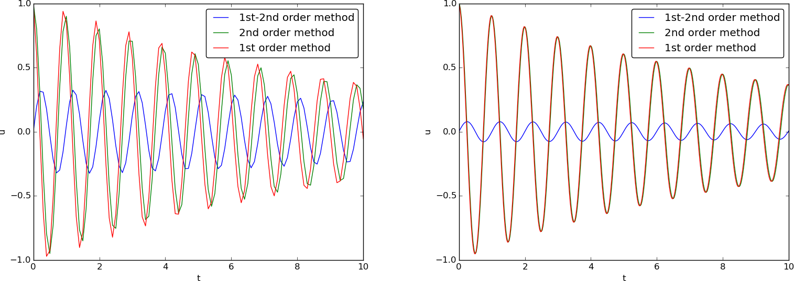

Generalization: damping, nonlinearities, and excitation
We shall now generalize the simple model problem from the section Finite difference discretization to include a possibly nonlinear damping term \( f(u^{\prime}) \), a possibly nonlinear spring (or restoring) force \( s(u) \), and some external excitation \( F(t) \): $$ \begin{equation} mu^{\prime\prime} + f(u^{\prime}) + s(u) = F(t),\quad u(0)=I,\ u^{\prime}(0)=V,\ t\in (0,T] \tp \tag{1.75} \end{equation} $$ We have also included a possibly nonzero initial value of \( u^{\prime}(0) \). The parameters \( m \), \( f(u^{\prime}) \), \( s(u) \), \( F(t) \), \( I \), \( V \), and \( T \) are input data.
There are two main types of damping (friction) forces: linear \( f(u^{\prime})=bu \), or quadratic \( f(u^{\prime})=bu^{\prime}|u^{\prime}| \). Spring systems often feature linear damping, while air resistance usually gives rise to quadratic damping. Spring forces are often linear: \( s(u)=cu \), but nonlinear versions are also common, the most famous is the gravity force on a pendulum that acts as a spring with \( s(u)\sim \sin(u) \).
A centered scheme for linear damping
Sampling (1.75) at a mesh point \( t_n \), replacing \( u^{\prime\prime}(t_n) \) by \( [D_tD_tu]^n \), and \( u^{\prime}(t_n) \) by \( [D_{2t}u]^n \) results in the discretization $$ \begin{equation} [mD_tD_t u + f(D_{2t}u) + s(u) = F]^n, \tag{1.76} \end{equation} $$ which written out means $$ \begin{equation} m\frac{u^{n+1}-2u^n + u^{n-1}}{\Delta t^2} + f(\frac{u^{n+1}-u^{n-1}}{2\Delta t}) + s(u^n) = F^n, \tag{1.77} \end{equation} $$ where \( F^n \) as usual means \( F(t) \) evaluated at \( t=t_n \). Solving (1.77) with respect to the unknown \( u^{n+1} \) gives a problem: the \( u^{n+1} \) inside the \( f \) function makes the equation nonlinear unless \( f(u^{\prime}) \) is a linear function, \( f(u^{\prime})=bu^{\prime} \). For now we shall assume that \( f \) is linear in \( u^{\prime} \). Then $$ \begin{equation} m\frac{u^{n+1}-2u^n + u^{n-1}}{\Delta t^2} + b\frac{u^{n+1}-u^{n-1}}{2\Delta t} + s(u^n) = F^n, \tag{1.78} \end{equation} $$ which gives an explicit formula for \( u \) at each new time level: $$ \begin{equation} u^{n+1} = (2mu^n + (\frac{b}{2}\Delta t - m)u^{n-1} + \Delta t^2(F^n - s(u^n)))(m + \frac{b}{2}\Delta t)^{-1} \tag{1.79} \tp \end{equation} $$
For the first time step we need to discretize \( u^{\prime}(0)=V \) as \( [D_{2t}u = V]^0 \) and combine with (1.79) for \( n=0 \). The discretized initial condition leads to $$ \begin{equation} u^{-1} = u^{1} - 2\Delta t V, \tag{1.80} \end{equation} $$ which inserted in (1.79) for \( n=0 \) gives an equation that can be solved for \( u^1 \): $$ \begin{equation} u^1 = u^0 + \Delta t\, V + \frac{\Delta t^2}{2m}(-bV - s(u^0) + F^0) \tp \tag{1.81} \end{equation} $$
A centered scheme for quadratic damping
When \( f(u^{\prime})=bu^{\prime}|u^{\prime}| \), we get a quadratic equation for \( u^{n+1} \) in (1.77). This equation can be straightforwardly solved by the well-known formula for the roots of a quadratic equation. However, we can also avoid the nonlinearity by introducing an approximation with an error of order no higher than what we already have from replacing derivatives with finite differences.
We start with (1.75) and only replace \( u^{\prime\prime} \) by \( D_tD_tu \), resulting in $$ \begin{equation} [mD_tD_t u + bu^{\prime}|u^{\prime}| + s(u) = F]^n\tp \tag{1.82} \end{equation} $$ Here, \( u^{\prime}|u^{\prime}| \) is to be computed at time \( t_n \). The idea is now to introduce a geometric mean, defined by $$ (w^2)^n \approx w^{n-\half}w^{n+\half},$$ for some quantity \( w \) depending on time. The error in the geometric mean approximation is \( \Oof{\Delta t^2} \), the same as in the approximation \( u^{\prime\prime}\approx D_tD_tu \). With \( w=u^{\prime} \) it follows that $$ [u^{\prime}|u^{\prime}|]^n \approx u^{\prime}(t_{n+\half})|u^{\prime}(t_{n-\half})|\tp$$ The next step is to approximate \( u^{\prime} \) at \( t_{n\pm 1/2} \), and fortunately a centered difference fits perfectly into the formulas since it involves \( u \) values at the mesh points only. With the approximations $$ \begin{equation} u^{\prime}(t_{n+1/2})\approx [D_t u]^{n+\half},\quad u^{\prime}(t_{n-1/2})\approx [D_t u]^{n-\half}, \tag{1.83} \end{equation} $$ we get $$ \begin{equation} [u^{\prime}|u^{\prime}|]^n \approx [D_tu]^{n+\half}|[D_tu]^{n-\half}| = \frac{u^{n+1}-u^n}{\Delta t} \frac{|u^n-u^{n-1}|}{\Delta t} \tp \tag{1.84} \end{equation} $$ The counterpart to (1.77) is then $$ \begin{equation} m\frac{u^{n+1}-2u^n + u^{n-1}}{\Delta t^2} + b\frac{u^{n+1}-u^n}{\Delta t}\frac{|u^n-u^{n-1}|}{\Delta t} + s(u^n) = F^n, \tag{1.85} \end{equation} $$ which is linear in the unknown \( u^{n+1} \). Therefore, we can easily solve (1.85) with respect to \( u^{n+1} \) and achieve the explicit updating formula $$ \begin{align} u^{n+1} &= \left( m + b|u^n-u^{n-1}|\right)^{-1}\times \nonumber\\ & \qquad \left(2m u^n - mu^{n-1} + bu^n|u^n-u^{n-1}| + \Delta t^2 (F^n - s(u^n)) \right) \tp \tag{1.86} \end{align} $$
In the derivation of a special equation for the first time step we run into some trouble: inserting (1.80) in (1.86) for \( n=0 \) results in a complicated nonlinear equation for \( u^1 \). By thinking differently about the problem we can easily get away with the nonlinearity again. We have for \( n=0 \) that \( b[u^{\prime}|u^{\prime}|]^0 = bV|V| \). Using this value in (1.82) gives $$ \begin{equation} [mD_tD_t u + bV|V| + s(u) = F]^0 \tp \tag{1.87} \end{equation} $$ Writing this equation out and using (1.80) results in the special equation for the first time step: $$ \begin{equation} u^1 = u^0 + \Delta t V + \frac{\Delta t^2}{2m}\left(-bV|V| - s(u^0) + F^0\right) \tp \tag{1.88} \end{equation} $$
A forward-backward discretization of the quadratic damping term
The previous section first proposed to discretize the quadratic damping term \( |u^{\prime}|u^{\prime} \) using centered differences: \( [|D_{2t}|D_{2t}u]^n \). As this gives rise to a nonlinearity in \( u^{n+1} \), it was instead proposed to use a geometric mean combined with centered differences. But there are other alternatives. To get rid of the nonlinearity in \( [|D_{2t}|D_{2t}u]^n \), one can think differently: apply a backward difference to \( |u^{\prime}| \), such that the term involves known values, and apply a forward difference to \( u^{\prime} \) to make the term linear in the unknown \( u^{n+1} \). With mathematics, $$ \begin{equation} [\beta |u^{\prime}|u^{\prime}]^n \approx \beta |[D_t^-u]^n|[D_t^+ u]^n = \beta\left\vert\frac{u^n-u^{n-1}}{\Delta t}\right\vert \frac{u^{n+1}-u^n}{\Delta t}\tp \tag{1.89} \end{equation} $$ The forward and backward differences have both an error proportional to \( \Delta t \) so one may think the discretization above leads to a first-order scheme. However, by looking at the formulas, we realize that the forward-backward differences in (1.89) result in exactly the same scheme as in (1.85) where we used a geometric mean and centered differences and committed errors of size \( \Oof{\Delta t^2} \). Therefore, the forward-backward differences in (1.89) act in a symmetric way and actually produce a second-order accurate discretization of the quadratic damping term.
Implementation
The algorithm arising from the methods in the sections A centered scheme for linear damping and A centered scheme for quadratic damping is very similar to the undamped case in the section A centered finite difference scheme. The difference is basically a question of different formulas for \( u^1 \) and \( u^{n+1} \). This is actually quite remarkable. The equation (1.75) is normally impossible to solve by pen and paper, but possible for some special choices of \( F \), \( s \), and \( f \). On the contrary, the complexity of the nonlinear generalized model (1.75) versus the simple undamped model is not a big deal when we solve the problem numerically!
The computational algorithm takes the form
- \( u^0=I \)
- compute \( u^1 \) from (1.81) if linear damping or (1.88) if quadratic damping
- for \( n=1,2,\ldots,N_t-1 \):
- compute \( u^{n+1} \) from (1.79) if linear damping or (1.86) if quadratic damping
solver function for the undamped case is fairly
easy, the big difference being many more terms and if tests on
the type of damping:
def solver(I, V, m, b, s, F, dt, T, damping='linear'):
"""
Solve m*u'' + f(u') + s(u) = F(t) for t in (0,T],
u(0)=I and u'(0)=V,
by a central finite difference method with time step dt.
If damping is 'linear', f(u')=b*u, while if damping is
'quadratic', f(u')=b*u'*abs(u').
F(t) and s(u) are Python functions.
"""
dt = float(dt); b = float(b); m = float(m) # avoid integer div.
Nt = int(round(T/dt))
u = np.zeros(Nt+1)
t = np.linspace(0, Nt*dt, Nt+1)
u[0] = I
if damping == 'linear':
u[1] = u[0] + dt*V + dt**2/(2*m)*(-b*V - s(u[0]) + F(t[0]))
elif damping == 'quadratic':
u[1] = u[0] + dt*V + \
dt**2/(2*m)*(-b*V*abs(V) - s(u[0]) + F(t[0]))
for n in range(1, Nt):
if damping == 'linear':
u[n+1] = (2*m*u[n] + (b*dt/2 - m)*u[n-1] +
dt**2*(F(t[n]) - s(u[n])))/(m + b*dt/2)
elif damping == 'quadratic':
u[n+1] = (2*m*u[n] - m*u[n-1] + b*u[n]*abs(u[n] - u[n-1])
+ dt**2*(F(t[n]) - s(u[n])))/\
(m + b*abs(u[n] - u[n-1]))
return u, t
The complete code resides in the file vib.py.
Verification
Constant solution
For debugging and initial verification, a constant solution is often
very useful. We choose \( \uex(t)=I \), which implies \( V=0 \).
Inserted in the ODE, we get
\( F(t)=s(I) \) for any choice of \( f \). Since the discrete derivative
of a constant vanishes (in particular, \( [D_{2t}I]^n=0 \),
\( [D_tI]^n=0 \), and \( [D_tD_t I]^n=0 \)), the constant solution also fulfills
the discrete equations. The constant should therefore be reproduced
to machine precision. The function test_constant in vib.py
implements this test.
Linear solution
Now we choose a linear solution: \( \uex = ct + d \). The initial condition \( u(0)=I \) implies \( d=I \), and \( u^{\prime}(0)=V \) forces \( c \) to be \( V \). Inserting \( \uex=Vt+I \) in the ODE with linear damping results in $$ 0 + bV + s(Vt+I) = F(t),$$ while quadratic damping requires the source term $$ 0 + b|V|V + s(Vt+I) = F(t)\tp$$ Since the finite difference approximations used to compute \( u^{\prime} \) all are exact for a linear function, it turns out that the linear \( \uex \) is also a solution of the discrete equations. Exercise 1.10: Use linear/quadratic functions for verification asks you to carry out all the details.
Quadratic solution
Choosing \( \uex = bt^2 + Vt + I \), with \( b \) arbitrary, fulfills the initial conditions and fits the ODE if \( F \) is adjusted properly. The solution also solves the discrete equations with linear damping. However, this quadratic polynomial in \( t \) does not fulfill the discrete equations in case of quadratic damping, because the geometric mean used in the approximation of this term introduces an error. Doing Exercise 1.10: Use linear/quadratic functions for verification will reveal the details. One can fit \( F^n \) in the discrete equations such that the quadratic polynomial is reproduced by the numerical method (to machine precision).
Catching bugs
How good are the constant and quadratic solutions at catching bugs in the implementation?
- Use
minstead of2*min the denominator ofu[1]: constant works, while quadratic fails. - Use
b*dtinstead ofb*dt/2in the updating formula foru[n+1]in case of linear damping: constant and quadratic fail. - Use
F[n+1]instead ofF[n]in case of linear or quadratic damping: constant solution works, quadratic fails.
Visualization
The functions for visualizations differ significantly from
those in the undamped case in the vib_undamped.py program because,
in the present general case, we do not have an exact solution to
include in the plots. Moreover, we have no good estimate of
the periods of the oscillations as there will be one period
determined by the system parameters, essentially the
approximate frequency \( \sqrt{s'(0)/m} \) for linear \( s \) and small damping,
and one period dictated by \( F(t) \) in case the excitation is periodic.
This is, however,
nothing that the program can depend on or make use of.
Therefore, the user has to specify \( T \) and the window width
to get a plot that moves with the graph and shows
the most recent parts of it in long time simulations.
The vib.py code
contains several functions for analyzing the time series signal
and for visualizing the solutions.
User interface
The main function is changed substantially from
the vib_undamped.py code, since we need to
specify the new data \( c \), \( s(u) \), and \( F(t) \). In addition, we must
set \( T \) and the plot window width (instead of the number of periods we
want to simulate as in vib_undamped.py). To figure out whether we
can use one plot for the whole time series or if we should follow the
most recent part of \( u \), we can use the plot_empricial_freq_and_amplitude
function's estimate of the number of local maxima. This number is now
returned from the function and used in main to decide on the
visualization technique.
def main():
import argparse
parser = argparse.ArgumentParser()
parser.add_argument('--I', type=float, default=1.0)
parser.add_argument('--V', type=float, default=0.0)
parser.add_argument('--m', type=float, default=1.0)
parser.add_argument('--c', type=float, default=0.0)
parser.add_argument('--s', type=str, default='u')
parser.add_argument('--F', type=str, default='0')
parser.add_argument('--dt', type=float, default=0.05)
parser.add_argument('--T', type=float, default=140)
parser.add_argument('--damping', type=str, default='linear')
parser.add_argument('--window_width', type=float, default=30)
parser.add_argument('--savefig', action='store_true')
a = parser.parse_args()
from scitools.std import StringFunction
s = StringFunction(a.s, independent_variable='u')
F = StringFunction(a.F, independent_variable='t')
I, V, m, c, dt, T, window_width, savefig, damping = \
a.I, a.V, a.m, a.c, a.dt, a.T, a.window_width, a.savefig, \
a.damping
u, t = solver(I, V, m, c, s, F, dt, T)
num_periods = empirical_freq_and_amplitude(u, t)
if num_periods <= 15:
figure()
visualize(u, t)
else:
visualize_front(u, t, window_width, savefig)
show()
The program vib.py contains
the above code snippets and can solve the model problem
(1.75). As a demo of vib.py, we consider the case
\( I=1 \), \( V=0 \), \( m=1 \), \( c=0.03 \), \( s(u)=\sin(u) \), \( F(t)=3\cos(4t) \),
\( \Delta t = 0.05 \), and \( T=140 \). The relevant command to run is
Terminal> python vib.py --s 'sin(u)' --F '3*cos(4*t)' --c 0.03
This results in a moving window following the function on the screen. Figure 17 shows a part of the time series.
Figure 17: Damped oscillator excited by a sinusoidal function.

The Euler-Cromer scheme for the generalized model
The ideas of the Euler-Cromer method from the section The Euler-Cromer method carry over to the generalized model. We write (1.75) as two equations for \( u \) and \( v=u^{\prime} \). The first equation is taken as the one with \( v^{\prime} \) on the left-hand side: $$ \begin{align} v^{\prime} &= \frac{1}{m}(F(t)-s(u)-f(v)), \tag{1.90}\\ u^{\prime} &= v\tp \tag{1.91} \end{align} $$ The idea is to step (1.90) forward using a standard Forward Euler method, while we update \( u \) from (1.91) with a Backward Euler method, utilizing the recent, computed \( v^{n+1} \) value. In detail, $$ \begin{align} \frac{v^{n+1}-v^n}{\Delta t} &= \frac{1}{m}(F(t_n)-s(u^n)-f(v^n)), \tag{1.92}\\ \frac{u^{n+1}-u^n}{\Delta t} &= v^{n+1}, \tag{1.93} \end{align} $$ resulting in the explicit scheme $$ \begin{align} v^{n+1} &= v^n + \Delta t\frac{1}{m}(F(t_n)-s(u^n)-f(v^n)), \tag{1.94}\\ u^{n+1} &= u^n + \Delta t\,v^{n+1}\tp \tag{1.95} \end{align} $$ We immediately note one very favorable feature of this scheme: all the nonlinearities in \( s(u) \) and \( f(v) \) are evaluated at a previous time level. This makes the Euler-Cromer method easier to apply and hence much more convenient than the centered scheme for the second-order ODE (1.75).
The initial conditions are trivially set as $$ \begin{align} v^0 &= V, \tag{1.96}\\ u^0 &= I\tp \tag{1.97} \end{align} $$
(hpl 8: odespy for the generalized problem)
The Stoermer-Verlet algorithm for the generalized model
We can easily apply the ideas from the section The Stoermer-Verlet algorithm to extend that method to the generalized model $$ \begin{align*} v^{\prime} &= \frac{1}{m}(F(t)-s(u)-f(v)),\\ u^{\prime} &= v\tp \end{align*} $$ However, since the scheme is essentially centered differences for the ODE system on a staggered mesh, we do not go into detail here, but refer to the section A staggered Euler-Cromer scheme for a generalized model.
A staggered Euler-Cromer scheme for a generalized model
The more general model for vibration problems, $$ \begin{equation} mu'' + f(u') + s(u) = F(t),\quad u(0)=I,\ u'(0)=V,\ t\in (0,T], \tag{1.98} \end{equation} $$ can be rewritten as a first-order ODE system $$ \begin{align} v' &= m^{-1}\left(F(t) - f(v) - s(u)\right), \tag{1.99}\\ u' &= v\tp \tag{1.100} \end{align} $$ It is natural to introduce a staggered mesh (see the section The Euler-Cromer scheme on a staggered mesh) and seek \( u \) at mesh points \( t_n \) (the numerical value is denoted by \( u^n \)) and \( v \) between mesh points at \( t_{n+1/2} \) (the numerical value is denoted by \( v^{n+\half} \)). A centered difference approximation to (1.100)-(1.99) can then be written in operator notation as $$ \begin{align} \lbrack D_tv &= m^{-1}\left(F(t) - f(v) - s(u)\right)\rbrack^n, \tag{1.101}\\ \lbrack D_t u &= v\rbrack^{n+\half}\tp \tag{1.102} \end{align} $$ Written out, $$ \begin{align} \frac{v^{n+\half} - v^{n-\half}}{\Delta t} &= m^{-1}\left(F^n - f(v^n) - s(u^n)\right), \tag{1.103}\\ \frac{u^n - u^{n-1}}{\Delta t} &= v^{n+\half}\tp \tag{1.104} \end{align} $$
With linear damping, \( f(v)=bv \), we can use an arithmetic mean for \( f(v^n) \): \( f(v^n)\approx = \half(f(v^{n-\half}) + f(v^{n+\half})) \). The system (1.103)-(1.104) can then be solved with respect to the unknowns \( u^n \) and \( v^{n+\half} \): $$ \begin{align} v^{n+\half} &= \left(1 + \frac{b}{2m}\Delta t\right)^{-1}\left( v^{n-\half} + {\Delta t} m^{-1}\left(F^n - {\half}f(v^{n-\half}) - s(u^n)\right)\right), \tag{1.105}\\ u^n & = u^{n-1} + {\Delta t}v^{n-\half}\tp \tag{1.106} \end{align} $$
In case of quadratic damping, \( f(v)=b|v|v \), we can use a geometric mean: \( f(v^n)\approx b|v^{n-\half}|v^{n+\half} \). Inserting this approximation in (1.103)-(1.104) and solving for the unknowns \( u^n \) and \( v^{n+\half} \) results in $$ \begin{align} v^{n+\half} &= (1 + \frac{b}{m}|v^{n-\half}|\Delta t)^{-1}\left( v^{n-\half} + {\Delta t} m^{-1}\left(F^n - s(u^n)\right)\right), \tag{1.107}\\ u^n & = u^{n-1} + {\Delta t}v^{n-\half}\tp \tag{1.108} \end{align} $$
The initial conditions are derived at the end of the section The Euler-Cromer scheme on a staggered mesh: $$ \begin{align} u^0 &= I, \tag{1.109}\\ v^\half &= V - \half\Delta t\omega^2I \tag{1.110}\tp \end{align} $$
(hpl 9: Must deal with two things: how to set initial conditions on \( v \), and how to make phase-space plots with \( v \) at integer mesh points. See article.)
The PEFRL 4th-order accurate algorithm
A variant of the Euler-Cromer type of algorithm, which provides an error \( \Oof{\Delta t^4} \) if \( f(v)=0 \), is called PEFRL [5]. This algorithm is very well suited for integrating dynamic systems (especially those without damping) over very long time periods. Define $$ g(u,v) = \frac{1}{m}(F(t)-s(u)-f(v))\tp$$ The algorithm is explicit and features these simple steps: $$ \begin{align} u^{n+1,1} &= u^n + \xi\Delta t v^n, \tag{1.111}\\ v^{n+1,1} &= v^n + \half(1-2\lambda)\Delta t g(u^{n+1,1},v^n), \tag{1.112}\\ u^{n+1,2} &= u^{n+1,1} + \chi\Delta t v^{n+1,1}, \tag{1.113}\\ v^{n+1,2} &= v^{n+1,1} + \lambda\Delta t g(u^{n+1,2}, v^{n+1,1}), \tag{1.114}\\ u^{n+1,3} &= u^{n+1,2} + (1-2(\chi + \xi))\Delta t v^{n+1,2}, \tag{1.115}\\ v^{n+1,3} &= v^{n+1,2} + \lambda\Delta t g(u^{n+1,3}, v^{n+1,2}), \tag{1.116}\\ u^{n+1,4} &= u^{n+1,3} + \chi\Delta t v^{n+1,3}, \tag{1.117}\\ v^{n+1} &= v^{n+1,3} + \half(1-2\lambda)\Delta t g(u^{n+1,4},v^{n+1,3}), \tag{1.118}\\ u^{n+1} &= u^{n+1,4} + \xi\Delta t v^{n+1} \tag{1.119} \end{align} $$ The parameters \( \xi \), \( \lambda \), and \( \xi \) have the values $$ \begin{align} \xi &= 0.1786178958448091, \tag{1.120}\\ \lambda &= -0.2123418310626054, \tag{1.121}\\ \chi &= -0.06626458266981849 \tag{1.122} \end{align} $$
Exercises and Problems
Exercise 1.19: Implement the solver via classes
Reimplement the vib.py program using a class Problem to hold all
the physical parameters of the problem, a class Solver to hold the
numerical parameters and compute the solution, and a class
Visualizer to display the solution.
Use the ideas and examples for an ODE
model
in [2]. More specifically, make a superclass
Problem for holding the scalar physical parameters of a problem and
let subclasses implement the \( s(u) \) and \( F(t) \) functions as methods.
Try to call up as much existing functionality in vib.py as possible.
The complete code looks like this.
# Reimplementation of vib.py using classes
import numpy as np
import scitools.std as plt
import sympy as sym
from vib import solver as vib_solver
from vib import visualize as vib_visualize
from vib import visualize_front as vib_visualize_front
from vib import visualize_front_ascii as vib_visualize_front_ascii
from vib import plot_empirical_freq_and_amplitude as \
vib_plot_empirical_freq_and_amplitude
class Vibration:
'''
Problem: m*u'' + f(u') + s(u) = F(t) for t in (0,T],
u(0)=I and u'(0)=V. The problem is solved
by a central finite difference method with time step dt.
If damping is 'linear', f(u')=b*u, while if damping is
'quadratic', f(u')=b*u'*abs(u'). Zero damping is achieved
with b=0. F(t) and s(u) are Python functions.
'''
def __init__(self, I=1, V=0, m=1, b=0, damping='linear'):
self.I = I; self.V = V; self.m = m; self.b=b;
self.damping = damping
def s(self, u):
return u
def F(self, t):
'''Driving force. Zero implies free oscillations'''
return 0
class Free_vibrations(Vibration):
'''F(t) = 0'''
def __init__(self, s=None, I=1, V=0, m=1, b=0, damping='linear'):
Vibration.__init__(self, I=I, V=V, m=m, b=b, damping=damping)
if s != None:
self.s = s
class Forced_vibrations(Vibration):
'''F(t)! = 0'''
def __init__(self, F, s=None, I=1, V=0, m=1, b=0,
damping='linear'):
Vibration.__init__(self, I=I, V=V, m=m, b=b,
damping=damping)
if s != None:
self.s = s
self.F = F
class Solver:
def __init__(self, dt=0.05, T=20):
self.dt = dt; self.T = T
def solve(self, problem):
self.u, self.t = vib_solver(
problem.I, problem.V,
problem.m, problem.b,
problem.s, problem.F,
self.dt, self.T, problem.damping)
class Visualizer:
def __init__(self, problem, solver, window_width, savefig):
self.problem = problem; self.solver = solver
self.window_width = window_width; self.savefig = savefig
def visualize(self):
u = self.solver.u; t = self.solver.t # short forms
num_periods = vib_plot_empirical_freq_and_amplitude(u, t)
if num_periods <= 40:
plt.figure()
vib_visualize(u, t)
else:
vib_visualize_front(u, t, self.window_width, self.savefig)
vib_visualize_front_ascii(u, t)
plt.show()
def main():
# Note: the reading of parameter values would better be done
# from each relevant class, i.e. class Problem should read I, V,
# etc., while class Solver should read dt and T, and so on.
# Consult, e.g., Langtangen: "A Primer on Scientific Programming",
# App E.
import argparse
parser = argparse.ArgumentParser()
parser.add_argument('--I', type=float, default=1.0)
parser.add_argument('--V', type=float, default=0.0)
parser.add_argument('--m', type=float, default=1.0)
parser.add_argument('--b', type=float, default=0.0)
parser.add_argument('--s', type=str, default=None)
parser.add_argument('--F', type=str, default='0')
parser.add_argument('--dt', type=float, default=0.05)
parser.add_argument('--T', type=float, default=20)
parser.add_argument('--window_width', type=float, default=30.,
help='Number of periods in a window')
parser.add_argument('--damping', type=str, default='linear')
parser.add_argument('--savefig', action='store_true')
# Hack to allow --SCITOOLS options
# (scitools.std reads this argument at import)
parser.add_argument('--SCITOOLS_easyviz_backend',
default='matplotlib')
a = parser.parse_args()
from scitools.std import StringFunction
if a.s != None:
s = StringFunction(a.s, independent_variable='u')
else:
s = None
F = StringFunction(a.F, independent_variable='t')
if a.F == '0': # free vibrations
problem = Free_vibrations(s=s, I=a.I, V=a.V, m=a.m, b=a.b,
damping=a.damping)
else: # forced vibrations
problem = Forced_vibrations(lambda t: np.sin(t),
s=s, I=a.I, V=a.V,
m=a.m, b=a.b, damping=a.damping)
solver = Solver(dt=a.dt, T=a.T)
solver.solve(problem)
visualizer = Visualizer(problem, solver,
a.window_width, a.savefig)
visualizer.visualize()
if __name__ == '__main__':
main()
Filename: vib_class.
Problem 1.20: Use a backward difference for the damping term
As an alternative to discretizing the damping terms \( \beta u^{\prime} \) and \( \beta |u^{\prime}|u^{\prime} \) by centered differences, we may apply backward differences: $$ \begin{align*} [u^{\prime}]^n &\approx [D_t^-u]^n,\\ & [|u^{\prime}|u^{\prime}]^n\\ &\approx [|D_t^-u|D_t^-u]^n\\ &= |[D_t^-u]^n|[D_t^-u]^n\tp \end{align*} $$ The advantage of the backward difference is that the damping term is evaluated using known values \( u^n \) and \( u^{n-1} \) only. Extend the vib.py code with a scheme based on using backward differences in the damping terms. Add statements to compare the original approach with centered difference and the new idea launched in this exercise. Perform numerical experiments to investigate how much accuracy that is lost by using the backward differences.
The new discretization approach of the linear and quadratic damping terms calls for new derivations of the updating formulas (for \( u \)) in the solver. Since backward difference approximations will be used for the damping term, we may also use this approximation for the initial condition on \( u^{\prime}(0) \) without deteriorating the convergence rate any further. Note that introducing backward difference approximations for the damping term make our computational schemes first order, as opposed to the original second order schemes which used central difference approximations also for the damping terms. The motivation for also using a backward difference approximation for the initial condition on \( u^{\prime}(0) \), is simply that the computational schemes get much simpler.
With linear damping, the new discretized form of the equation reads
$$
\begin{equation*}
m\frac{u^{n+1}-2u^n+u^{n-1}}{\Delta t^2} + b\frac{u^n - u^{n-1}}{\Delta t} + s(u^n) = F^n,
\nonumber
\end{equation*}
$$
which gives us
$$
\begin{equation*}
u^{n+1} = \left(2-\frac{\Delta t b}{m}\right)u^n + \frac{\Delta t^2}{m}\left(F^n - s(u^n)\right) + \left(\frac{\Delta t b}{m} - 1\right)u^{n-1}.
\nonumber
\end{equation*}
$$
With \( n=0 \), the updating formula becomes
$$
\begin{equation*}
u^1 = \left(2-\frac{\Delta t b}{m}\right)u^0 + \frac{\Delta t^2}{m}\left(F^0 - s(u^0)\right) + \left(\frac{\Delta t b}{m} - 1\right)u^{-1},
\nonumber
\end{equation*}
$$
which requires some further elaboration because of the unknown \( u^{-1} \). We handle this by discretizing the initial condition \( u^{\prime}(0) = V \) by a backward difference approximation as
$$
\begin{equation*}
\frac{u^0 - u^{-1}}{\Delta t} = V,
\nonumber
\end{equation*}
$$
which implies that
$$
\begin{equation*}
u^{-1} = u^0 - \Delta t V.
\nonumber
\end{equation*}
$$
Inserting this expression for \( u^{-1} \) in the updating formula for \( u^{n+1} \), and simplifying,
gives us the following special formula for the first time step:
$$
\begin{equation*}
u^1 = u^0 + \Delta t V + \frac{\Delta t^2}{m}\left(-bV - s(u^0) + F^0\right).
\nonumber
\end{equation*}
$$
Switching to quadratic damping, the new discretized form of the equations becomes
$$
\begin{equation*}
m\frac{u^{n+1}-2u^n+u^{n-1}}{\Delta t^2} + b|\frac{u^n - u^{n-1}}{\Delta t}|\frac{u^n - u^{n-1}}{\Delta t} + s(u^n) = F^n,
\nonumber
\end{equation*}
$$
which leads to
$$
\begin{equation*}
u^{n+1} = 2u^n - u^{n-1} - \frac{b}{m}|u^n - u^{n-1}|(u^n - u^{n-1}) + \frac{\Delta t^2}{m}\left(F^n - s(u^n)\right).
\nonumber
\end{equation*}
$$
With \( n=0 \), this updating formula becomes
$$
\begin{equation*}
u^1 = 2u^0 - u^{-1} - \frac{b}{m}|u^0 - u^{-1}|(u^0 - u^{-1}) + \frac{\Delta t^2}{m}\left(F^0 - s(u^0)\right).
\nonumber
\end{equation*}
$$
Again, we handle the unknown \( u^{-1} \) via the same expression as above, which be derived from a backward difference approximation to the initial condition on the derivative. Inserting this expression for \( u^{-1} \) and simplifying, gives the special updating formula for \( u^1 \) as
$$
\begin{equation*}
u^1 = u^0 + \Delta t V + \frac{\Delta t^2}{m}\left(-b|V|V - s(u^0) + F^0\right).
\nonumber
\end{equation*}
$$
We implement these new computational schemes in a new solver function
solver_bwdamping, so that the discrete solution for \( u \) can be found
by both the original and the new solver. The difference between the
two different solutions is then visualized in the same way as the
original solution in main.
The convergence rates computed in test_mms demonstrates that our
scheme now is a first order scheme, as \( r \) is seen to approach 1.0
with decreasing \( \Delta t \).
Both solvers reproduce a constant solution exactly (within machine precision), whereas sinusoidal and quadratic solutions differ, as should be expected after comparing the schemes. Pointing out the "best" approach is difficult: the backward differences yield a much simpler mathematical problem to be solved, while the more complicated method converges faster and gives more accuracy for the same cost. On the other hand, the backward differences can yield any reasonable accuracy by lowering \( \Delta t \), and the results are obtained within a few seconds on a laptop.
Here is the complete computer code, arising from copying vib.py and changing
the functions that have to be changed:
import numpy as np
#import matplotlib.pyplot as plt
import scitools.std as plt
def solver_bwdamping(I, V, m, b, s, F, dt, T, damping='linear'):
"""
Solve m*u'' + f(u') + s(u) = F(t) for t in (0,T],
u(0)=I and u'(0)=V. All terms except damping is discretized
by a central finite difference method with time step dt.
The damping term is discretized by a backward diff. approx.,
as is the init.cond. u'(0). If damping is 'linear', f(u')=b*u,
while if damping is 'quadratic', f(u')=b*u'*abs(u').
F(t) and s(u) are Python functions.
"""
dt = float(dt); b = float(b); m = float(m) # avoid integer div.
Nt = int(round(T/dt))
u = np.zeros(Nt+1)
t = np.linspace(0, Nt*dt, Nt+1)
u_original = np.zeros(Nt+1); u_original[0] = I # for testing
u[0] = I
if damping == 'linear':
u[1] = u[0] + dt*V + dt**2/m*(-b*V - s(u[0]) + F(t[0]))
elif damping == 'quadratic':
u[1] = u[0] + dt*V + \
dt**2/m*(-b*V*abs(V) - s(u[0]) + F(t[0]))
for n in range(1, Nt):
if damping == 'linear':
u[n+1] = (2 - dt*b/m)*u[n] + dt**2/m*(- s(u[n]) + \
F(t[n])) + (dt*b/m - 1)*u[n-1]
elif damping == 'quadratic':
u[n+1] = 2*u[n] - u[n-1] - b/m*abs(u[n] - \
u[n-1])*(u[n] - u[n-1]) + dt**2/m*(-s(u[n]) + F(t[n]))
return u, t
import sympy as sym
def test_constant():
"""Verify a constant solution."""
u_exact = lambda t: I
I = 1.2; V = 0; m = 2; b = 0.9
w = 1.5
s = lambda u: w**2*u
F = lambda t: w**2*u_exact(t)
dt = 0.2
T = 2
#u, t = solver(I, V, m, b, s, F, dt, T, 'linear')
u, t = solver_bwdamping(I, V, m, b, s, F, dt, T, 'linear')
difference = np.abs(u_exact(t) - u).max()
print difference
tol = 1E-13
assert difference < tol
#u, t = solver(I, V, m, b, s, F, dt, T, 'quadratic')
u, t = solver_bwdamping(I, V, m, b, s, F, dt, T, 'quadratic')
difference = np.abs(u_exact(t) - u).max()
print difference
assert difference < tol
def lhs_eq(t, m, b, s, u, damping='linear'):
"""Return lhs of differential equation as sympy expression."""
v = sym.diff(u, t)
if damping == 'linear':
return m*sym.diff(u, t, t) + b*v + s(u)
else:
return m*sym.diff(u, t, t) + b*v*sym.Abs(v) + s(u)
def test_quadratic():
"""Verify a quadratic solution."""
I = 1.2; V = 3; m = 2; b = 0.9
s = lambda u: 4*u
t = sym.Symbol('t')
dt = 0.2
T = 2
q = 2 # arbitrary constant
u_exact = I + V*t + q*t**2
F = sym.lambdify(t, lhs_eq(t, m, b, s, u_exact, 'linear'))
u_exact = sym.lambdify(t, u_exact, modules='numpy')
#u1, t1 = solver(I, V, m, b, s, F, dt, T, 'linear')
u1, t1 = solver_bwdamping(I, V, m, b, s, F, dt, T, 'linear')
diff = np.abs(u_exact(t1) - u1).max()
print diff
tol = 1E-13
#assert diff < tol
# In the quadratic damping case, u_exact must be linear
# in order to exactly recover this solution
u_exact = I + V*t
F = sym.lambdify(t, lhs_eq(t, m, b, s, u_exact, 'quadratic'))
u_exact = sym.lambdify(t, u_exact, modules='numpy')
#u2, t2 = solver(I, V, m, b, s, F, dt, T, 'quadratic')
u2, t2 = solver_bwdamping(I, V, m, b, s, F, dt, T, 'quadratic')
diff = np.abs(u_exact(t2) - u2).max()
print diff
assert diff < tol
def test_sinusoidal():
"""Verify a numerically exact sinusoidal solution when b=F=0."""
from math import asin
def u_exact(t):
w_numerical = 2/dt*np.arcsin(w*dt/2)
return I*np.cos(w_numerical*t)
I = 1.2; V = 0; m = 2; b = 0
w = 1.5 # fix the frequency
s = lambda u: m*w**2*u
F = lambda t: 0
dt = 0.2
T = 6
#u, t = solver(I, V, m, b, s, F, dt, T, 'linear')
u, t = solver_bwdamping(I, V, m, b, s, F, dt, T, 'linear')
diff = np.abs(u_exact(t) - u).max()
print diff
tol = 1E-14
#assert diff < tol
#u, t = solver(I, V, m, b, s, F, dt, T, 'quadratic')
u, t = solver_bwdamping(I, V, m, b, s, F, dt, T, 'quadratic')
print diff
diff = np.abs(u_exact(t) - u).max()
assert diff < tol
def test_mms():
"""Use method of manufactured solutions."""
m = 4.; b = 1
w = 1.5
t = sym.Symbol('t')
u_exact = 3*sym.exp(-0.2*t)*sym.cos(1.2*t)
I = u_exact.subs(t, 0).evalf()
V = sym.diff(u_exact, t).subs(t, 0).evalf()
u_exact_py = sym.lambdify(t, u_exact, modules='numpy')
s = lambda u: u**3
dt = 0.2
T = 6
errors_linear = []
errors_quadratic = []
# Run grid refinements and compute exact error
for i in range(5):
F_formula = lhs_eq(t, m, b, s, u_exact, 'linear')
F = sym.lambdify(t, F_formula)
#u1, t1 = solver(I, V, m, b, s, F, dt, T, 'linear')
u1, t1 = solver_bwdamping(I, V, m, b, s,
F, dt, T, 'linear')
error = np.sqrt(np.sum((u_exact_py(t1) - u1)**2)*dt)
errors_linear.append((dt, error))
F_formula = lhs_eq(t, m, b, s, u_exact, 'quadratic')
#print sym.latex(F_formula, mode='plain')
F = sym.lambdify(t, F_formula)
#u2, t2 = solver(I, V, m, b, s, F, dt, T, 'quadratic')
u2, t2 = solver_bwdamping(I, V, m, b, s,
F, dt, T, 'quadratic')
error = np.sqrt(np.sum((u_exact_py(t2) - u2)**2)*dt)
errors_quadratic.append((dt, error))
dt /= 2
# Estimate convergence rates
tol = 0.05
for errors in errors_linear, errors_quadratic:
for i in range(1, len(errors)):
dt, error = errors[i]
dt_1, error_1 = errors[i-1]
r = np.log(error/error_1)/np.log(dt/dt_1)
# check r for final simulation with (final and) smallest dt
# note that the method now is 1st order, i.e. r should
# approach 1.0
print r
assert abs(r - 1.0) < tol
import os, sys
sys.path.insert(0, os.path.join(os.pardir, 'src-vib'))
from vib import (plot_empirical_freq_and_amplitude,
visualize_front, visualize_front_ascii,
minmax, periods, amplitudes,
solver as solver2)
def visualize(list_of_curves, legends, title='', filename='tmp'):
"""Plot list of curves: (u, t)."""
for u, t in list_of_curves:
plt.plot(t, u)
plt.hold('on')
plt.legend(legends)
plt.xlabel('t')
plt.ylabel('u')
plt.title(title)
plt.savefig(filename + '.png')
plt.savefig(filename + '.pdf')
plt.show()
def main():
import argparse
parser = argparse.ArgumentParser()
parser.add_argument('--I', type=float, default=1.0)
parser.add_argument('--V', type=float, default=0.0)
parser.add_argument('--m', type=float, default=1.0)
parser.add_argument('--b', type=float, default=0.0)
parser.add_argument('--s', type=str, default='4*pi**2*u')
parser.add_argument('--F', type=str, default='0')
parser.add_argument('--dt', type=float, default=0.05)
parser.add_argument('--T', type=float, default=20)
parser.add_argument('--window_width', type=float, default=30.,
help='Number of periods in a window')
parser.add_argument('--damping', type=str, default='linear')
parser.add_argument('--savefig', action='store_true')
# Hack to allow --SCITOOLS options
# (scitools.std reads this argument at import)
parser.add_argument('--SCITOOLS_easyviz_backend',
default='matplotlib')
a = parser.parse_args()
from scitools.std import StringFunction
s = StringFunction(a.s, independent_variable='u')
F = StringFunction(a.F, independent_variable='t')
I, V, m, b, dt, T, window_width, savefig, damping = \
a.I, a.V, a.m, a.b, a.dt, a.T, a.window_width, a.savefig, \
a.damping
# compute u by both methods and then visualize the difference
u, t = solver2(I, V, m, b, s, F, dt, T, damping)
u_bw, _ = solver_bwdamping(I, V, m, b, s, F, dt, T, damping)
u_diff = u - u_bw
num_periods = plot_empirical_freq_and_amplitude(u_diff, t)
if num_periods <= 40:
plt.figure()
legends = ['1st-2nd order method',
'2nd order method',
'1st order method']
visualize([(u_diff, t), (u, t), (u_bw, t)], legends)
else:
visualize_front(u_diff, t, window_width, savefig)
#visualize_front_ascii(u_diff, t)
plt.show()
if __name__ == '__main__':
main()
#test_constant()
#test_sinusoidal()
#test_mms()
#test_quadratic()
raw_input()
Here is a comparison of standard method (2nd order) and backward differences for damping (1st order) for 10 (left) and 40 (right) time steps per period:

Filename: vib_gen_bwdamping.
Exercise 1.21: Use the forward-backward scheme with quadratic damping
We consider the generalized model with quadratic damping, expressed as a system of two first-order equations as in the section A staggered Euler-Cromer scheme for a generalized model: $$ \begin{align*} u^{\prime} &= v,\\ v' &= \frac{1}{m}\left( F(t) - \beta |v|v - s(u)\right)\tp \end{align*} $$ However, contrary to what is done in the section A staggered Euler-Cromer scheme for a generalized model, we want to apply the idea of a forward-backward discretization: \( u \) is marched forward by a one-sided Forward Euler scheme applied to the first equation, and thereafter \( v \) can be marched forward by a Backward Euler scheme in the second equation, see in the section The Euler-Cromer method. Express the idea in operator notation and write out the scheme. Unfortunately, the backward difference for the \( v \) equation creates a nonlinearity \( |v^{n+1}|v^{n+1} \). To linearize this nonlinearity, use the known value \( v^n \) inside the absolute value factor, i.e., \( |v^{n+1}|v^{n+1}\approx |v^n|v^{n+1} \). Show that the resulting scheme is equivalent to the one in the section A staggered Euler-Cromer scheme for a generalized model for some time level \( n\geq 1 \).
What we learn from this exercise is that the first-order differences
and the linearization trick play together in "the right way" such that
the scheme is as good as when we (in the section A staggered Euler-Cromer scheme for a generalized model)
carefully apply centered differences and a geometric mean on a
staggered mesh to achieve second-order accuracy.
There is a
difference in the handling of the initial conditions, though, as
explained at the end of the section The Euler-Cromer method.
Filename: vib_gen_bwdamping.